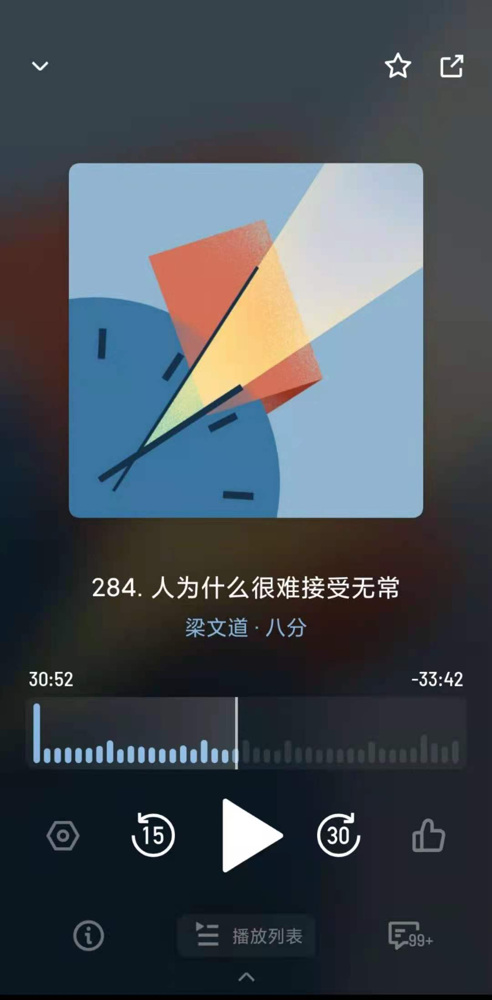
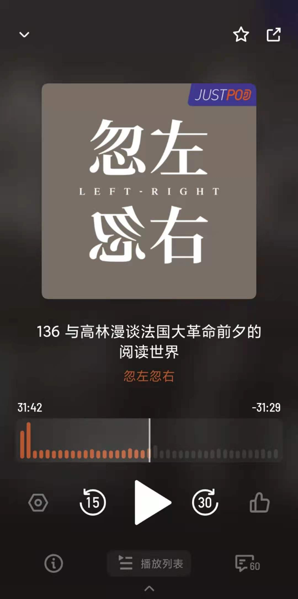

播客推荐
一、梁文道·八分

「八分」是由梁文道和看理想团队共同打造的一档全新文化类音频节目。
梁文道将和你一起从理想走到现实，重新审视文化现象、社会趋势和热点话题。
这是站主最爱的播客之一，每晚听着道长对时事的深入分析，
伴着他那温和有力的搞笑港普，缓缓睡去，是夜晚最温柔的时光。
二、The Indicator

节目虽小，五脏俱全。源自Planet Money团队，助你足不出户，掌握天下大事。
我们关注工作、商业、经济等等你能想到的一切，带给你富有洞见的精彩解析。快来听听看哦~
三、忽左忽右

「忽左忽右」千万不能睡觉听，也不能边工作边听，因为每期邀请到的与谈人都是某话题领域内的专家，信息密度极大。
正史野史交错纵横，观点金句接二连三，令人时而捧腹，时而凝思。子栏目「午后偏见」是站主的最爱，快来听听看吧！！！